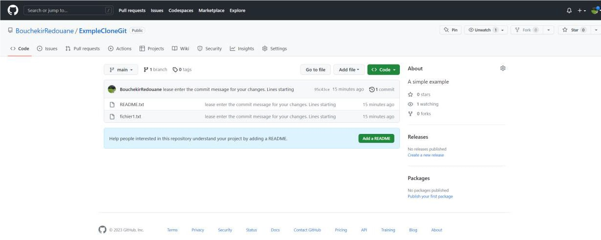
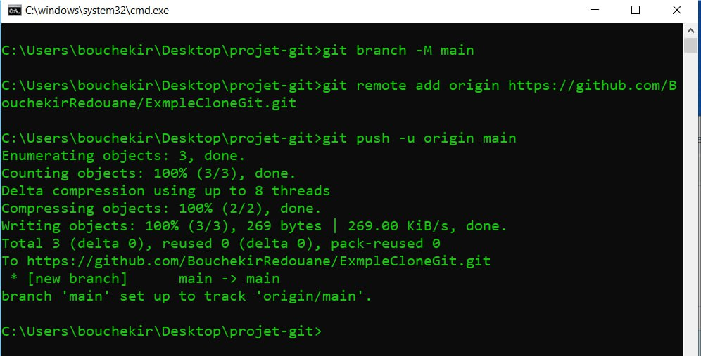
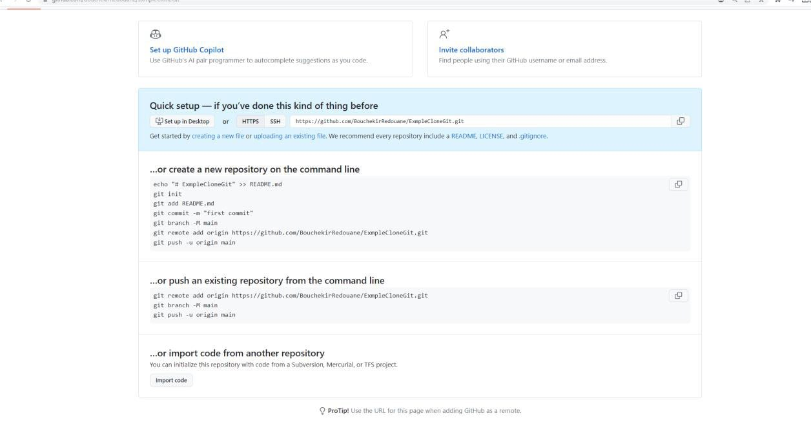
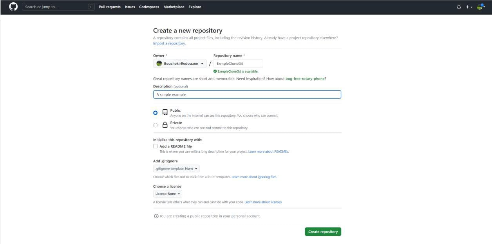
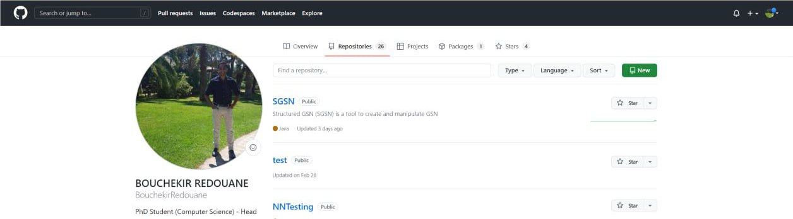

1. Les techniques de l’information et de la communication (TIC):
Les techniques de l'information et de la communication (TIC) englobent un ensemble d'outils et de technologies utilisés pour la gestion des informations. Elles permettent également de conserver et de présenter des données sous différentes formes telles que vocales, visuelles ou basées sur des signaux optiques, électromagnétiques . Elles ont émergé grâce à la convergence de l'informatique, des télécommunications, de l'électronique et de l'audiovisuel.
2. Catégories et objectifs :
Les TIC sont classées en trois grandes catégories : la téléinformatique qui concerne l'échange d'informations numériques entre plusieurs systèmes informatiques, les télécommunications qui englobent les systèmes communicants non informatiques comme la téléphonie mobile et l'électronique qui regroupe les composants et équipements grand public tels que les télévisions et lecteurs DVD.
Les objectifs des TIC sont la connectivité entre différents types d'ordinateurs utilisant des logiciels différents, la modularité en utilisant un ensemble restreint d'appareils généraux, une implantation simple selon différentes configurations, une utilisation facile avec des outils de communication qui libèrent les utilisateurs de la connaissance de la structure du réseau et enfin la fiabilité avec la détection et la correction des erreurs.
3. Composants de TIC:
Les technologies de l'information et de la communication (TIC) sont composées de deux aspects principaux : la partie matérielle et la partie logicielle. La partie matérielle englobe une variété d'appareils électronique du grand public. Elle comprend également les stations de travail et les serveurs, qui sont des machines permettant d'envoyer des données vers les réseaux et aussi une partie logicielle des TIC se compose des logiciels informatiques permettant d'utiliser les différents composants matériels. Elle inclut également les réseaux Internet ou mobiles, qui sont des infrastructures essentielles permettant la communication et l'échange d'informations.
4. Caractéristiques :
Les technologies de l'information et de la communication (TIC) offrent de multiples avantages aux entreprises. Tout d'abord, elles permettent d'améliorer la rapidité des activités en éliminant le besoin de déplacements, ce qui évite la perte de temps. De plus, la décentralisation du pouvoir grâce aux TIC permet aux agents de recevoir des informations pertinentes via des forums de discussion, favorisant ainsi la performance globale de l'entreprise. Elles offrent également un meilleur accès aux informations de toutes sortes pour l'ensemble du personnel, facilitant ainsi le partage et contribuant à une plus grande performance organisationnelle. En termes de rationalité, les TIC offrent un avantage concurrentiel en permettant le partage sécurisé d'informations confidentielles entre deux niveaux hiérarchiques. En outre, les TIC favorisent la mondialisation économique en permettant aux entreprises de participer à des activités internationales grâce à l'accès au réseau mondial d'information. Enfin, les TIC permettent une distribution efficace de l'information entre de nombreuses stations avec une excellente qualité, ainsi qu'une intensité élevée en termes de transmission et de réception d'informations, indépendamment du temps et de la région.
5. Initiation aux techniques de communication :
Objectifs de communication :
Les objectifs de communication sont définis en fonction des réactions attendues chez le destinataire. Ces objectifs se déclinent en trois dimensions. Au niveau cognitif, la communication vise à susciter la prise de conscience, l'attention, la notoriété et à fournir des informations sur une marque, un produit, une idée ou une entreprise. À ce stade, la communication est principalement informative. Au niveau affectif, l'objectif est de modifier ou renforcer l'image d'un produit en agissant sur les attitudes ou les opinions des consommateurs. Il s'agit de créer une connexion émotionnelle avec la marque. Enfin, au niveau comportemental, l'objectif est de provoquer des changements dans le comportement des consommateurs, tels que l'achat ou l'essai du produit. L'objectif est d'inciter à passer à l'action concrète.
Système de communication :
La communication implique différents acteurs et éléments essentiels. L'émetteur est responsable de transformer le message en signaux, tandis que le récepteur les reçoit et les interprète pour comprendre le message. Le message lui-même est émis par l'émetteur et est codé de manière à être transmis de manière structurée. Les médias, tels que les canaux de communication, sont utilisés pour transmettre le message.
Plusieurs fonctions sont impliquées, notamment le codage qui traduit le message en signaux compréhensibles. Le décodage consiste en l'interprétation du message par le récepteur. La réponse fait référence à l'opinion ou à la réaction du destinataire face au message, tandis que le feedback représente la réaction du récepteur, qu'elle soit immédiate (dans les communications personnalisées) ou différée (dans les communications de masse). Enfin, le bruit est un élément perturbateur qui peut perturber les signaux pendant leur transmission, pouvant affecter la qualité de la communication.
Les types de communication :
La communication est essentielle pour toutes les organisations et elle revêt différentes formes. On distingue deux types de communication : la communication institutionnelle qui vise à promouvoir l'image de marque de l'entreprise et peut prendre différentes formes publicitaires quant à la communication commerciale, elle met en avant les attributs d'un produit spécifique, en veillant à transmettre un message crédible. Ces deux types jouent un rôle clé dans la marketing de marque.
-Les schémas de communication :
La communication peut être classée en trois catégories principales. Tout d'abord, la communication interpersonnelle est utilisée lorsqu'on s'adresse à un collaborateur spécifique, et elle implique un émetteur qui transmet un message à un destinataire, un type retour d'information peut être attendu pour favoriser l'échange. Ensuite, la communication de groupe est utilisée lorsqu'on s'adresse à un groupe de personnes. Ici, l'émetteur cherche à transmettre un message à plusieurs destinataires et peut également attendre des retours pour bénéficier des différents points de vue. Enfin, la communication de masse est exemplifiée par la publicité. Dans ce cas, on ne s'attend généralement pas à un retour direct, mais l'efficacité de cette communication peut être mesurée.
-Média et Multimédia :
Le média se réfère à un moyen impersonnel de diffusion large et collective d’information à travers différents supports tels que les médias de communication . le multimédia englobe les techniques et les produits qui permettent l’utilisation interactive de différents modes de représentation de l’information .
1).Réseau informatique network :
Un ensemble d’ordinateur connectés entre eux , situé dans un certain domaine géographique et qui échange des info numériques selon des régles bien définies .
•Mise en réseau (networking) : c’est une mise en œuvre qui permet de parager des ressources entre ordinateurs , un réseau est un ensemble d’équipement interconnectés qui permet la communication de données entre appli peu importe la distance.
•Evolution : les réseau informatiques ont été créés pour permettre la communication entre des terminaux distants et un site central, ainsi que pour permettre la communication entre ordinateurs, initialement ils étaient utilisés pour le transport de données informatiques, mais ils sont maintenant de plus en plus utilisés pour intégrer la parole et la vidéo. Un réseau s’appuie sur 2 notions fondamentales : l’interconnexion et la communication.
2).Les caractéristiques de base d’un réseau sont :
- la toopologie qui définie l’architecture d’un réseau peut être physique ou logique
- le débit esprimé en bits par sec
- la distance maximale
- le nombre de nœuds maximum
3). Quelques terminologies en réseau :
- Station de travail : une machine capable d’envoyer des données vers le réseau.
- Nœud : une entité pouvant être adressée par un numéro unique, telle qu’une station de ---travail, une imprimante ou un serveur.
- Serveur : le dépositaire d’une fonction spécifique, tels que les services de base de données, de calcul, de fichiers ou de messagerie électronique.
- Paquet : la plus petite unité d’information pouvant être envoyée sur le réseau, contenant l’adresse de l’émetteur, l’adresse du récepteur et les données à transmettre.
- Réseaux homogènes : tous les ordinateurs sont du même constructeur.
- Réseaux hétérogènes : les ordinateurs reliés au réseau sont de constructeurs différents.
- Débit : la quantité de données numériques transmises par seconde, exprimée en bit/s ou en bps.
4) Eléments d’un réseau :
-les ordinateurs
-les logiciels
-les supports du LAN
-les équipements d’interconnexion du LAN
5) Classification des réseaux :
5.1.Par portée l’envergure (la distance) :
Les réseaux peuvent être classés en trois catégories en fonction de leur portée :
LAN (réseau local d’entreprise), MAN (réseau métropolitain ou urbain) et WAN (réseau étendu ou grande distance).
Les réseaux LAN sont généralement privés et limités à quelques centaines de mètres, tandis que les réseaux MAN peuvent relier des points distants de 10 à 25 km et utilisent souvent le câble co-axial. Les réseaux WAN sont des réseaux étendus publics qui peuvent transmettre des données sur des longues distances à l’échelle d’un pays ou de la planète.
D’autres types de réseaux existent également, tels que les PAN (réseau personnel), les WPAN et WLAN (réseaux sans fil) et les SAN (réseau de stockage).
5.2.Louverture (leur utilisation) :
On distingue trois types de réseaux :
l’intranet : qui est le réseau interne d’une entité organisationnelle ou d’une entreprise, l’extranet : qui est un réseau privé interne et externe ouvert vers l’extérieur, et internet : qui est un réseau public interconnecté à l’échelle de la planète.
5.3.Les supports de connexion : filaires et non filaires
Les réseaux filaires incluent ceux qui utilisent le câble coaxial, le câble en paires torsadées, la fibre optique et les lignes téléphoniques (Réseau Téléphonique Commuté).
Les réseaux sans fil utilisent d’autres moyens, tels que les ondes radios, les ondes infrarouges, les satellites et le Bluetooth.
5.4. Le type d’organisation : Peer to Peer et client serveur
• Les réseaux postes à postes : chaque ordinateur est serveur et client et libre de partager ses ressources ce réseau n’est pas sécurisé.
• Les réseaux client/serveur
5)Le type de topologie
• Les réseaux en bus : les machines sont relié par un câble coaxial nommé bus
• Les réseaux enétoile : station connectées a un nœud centrale
• Les réseaux en anneau : les ordinateurs sont connectés en boucle et communique chacun a leurs tour ce réseau utilise la méthode d’accés à « jeton ».
• Maillée : une structure réseau hybride reprenant un câblage en étoile regroupant différent nœuds de réseaux.
1) Les Composants matériel d’un Réseau informatique
Composants matériels d'un réseau informatique :
• Cartes réseau : permettent à un ordinateur de se connecter à un réseau en utilisant des protocoles de communication spécifiques.
• Switch : permet de connecter plusieurs appareils sur un réseau local (LAN) en utilisant des adresses MAC et en utilisant une table de correspondance pour envoyer les données uniquement à l'appareil destinataire.
• Hub : permet également de connecter plusieurs appareils sur un réseau local, mais fonctionne comme un répéteur et transmet les données à tous les autres appareils connectés sans utiliser une table de correspondance.
Modèle OSI : un modèle de référence pour les communications réseau qui divise les fonctions de communication en sept couches distinctes, il est utile pour comprendre les principes fondamentaux de la communication de réseau
• La couche physique : assure la transmission des données sur le support physique (câble, fibre optique, ondes radio).
• La couche liaison de données : gère la transmission des données entre les appareils qui partagent un même support physique.
• La couche réseau : est responsable du routage des données à travers le réseau.
• La couche transport : permet l'acheminement des données de bout en bout entre les appareils.
• La couche session : assure l'établissement et la gestion des sessions entre les appareils.
• La couche présentation : se charge de la conversion des données dans un format compréhensible par l'appareil de destination.
• La couche application : est responsable de la communication entre les applications sur les appareils du réseau.
Modèle TCP/IP : est un modèle de référence en réseau informatique avec quatre couches
• Le modèle TCP/IP a quatre couches.
• La première couche est la couche liaison de données, qui est responsable de la transmission des données sur le support physique du réseau.
L'adressage
L'adressage est un élément important des communications dans un réseau informatique. Il permet d'identifier de manière unique chaque équipement connecté au réseau. Les adresses IP sont utilisées pour diriger les paquets de données vers leur destination. Il existe deux versions principales d'adressage IP :
1- IPv4 et IPv6. L'IPv4 utilise des adresses de 32 bits, représentées sous la forme de quatre nombres décimaux séparés par des points.
2-L'IPv6 utilise des adresses de 128 bits, représentées sous forme de huit groupes de quatre chiffres hexadécimaux séparés par des deux-points.
L'adresse IPv4 :
L'adresse IPv4 est composée de 32 bits divisés en 4 octets et comprend une partie pour le réseau et une partie pour les hôtes.
La valeur des bits pour la partie réseau est la même pour tous les hôtes appartenant au même réseau. Le nombre de bits pour la partie hôte détermine le nombre de machines possibles sur le réseau et les types d'adresses IPv4 sont : l'adresse réseau, diffusion et l'adresse hôte Le masque de réseau et de sous-réseaux est utilisé pour déterminer l'adresse réseau et hôtes possibles. Les adresses sont généralement exprimées en décimal, mais peuvent aussi être représentées en binaire
Un réseau informatique relie des ordinateurs et des périphériques pour faciliter l'échange d'informations. Il permet la communication entre applications, indépendamment de la distance. Les réseaux ont évolué pour inclure la voix et la vidéo.
- Les caractéristiques d'un réseau incluent la topologie, le débit, la distance maximale et le nombre de nœuds maximum.
- Les termes importants incluent les stations de travail, les nœuds, les paquets et les réseaux homogènes/hétérogènes.
- Les éléments d'un réseau comprennent des ordinateurs, des logiciels, des supports de connexion et des équipements d'interconnexion.
- Les réseaux sont classifiés selon la portée, l'utilisation, les supports et l'organisation.
- Les topologies de réseau courantes sont le bus, l'étoile, l'anneau et la maillée.
1)Qu’est-ce que Git ? Maintenant que nous avons créé notre repo sur GitHub, nous pouvons transmettre nos fichiers
à ce repo : Si on vérifie notre repo sur GitHub, on peut voir les deux fichiers :
14) Ajouter ou modifier des fichiers dans un projet et actualiser
notre dépôt Git :
Git est un logiciel de gestion de versions créé en 2005 par Linus Torvalds, le créateur de Linux. Il permet de suivre les modifications apportées à un projet et de conserver un historique détaillé. Les logiciels de gestion de versions sont largement utilisés pour faciliter la gestion des projets et la collaboration en équipe. Git se distingue en tant que leader incontesté dans ce domaine et il est essentiel pour les développeurs de maîtriser son utilisation.
2) A quoi sert concrètement un système de gestion de version ?
Lorsque plusieurs développeurs travaillent sur un même site web, la gestion des modifications devient complexe. La solution consiste à utiliser un système de gestion de versions comme Git. Git permet de sauvegarder et restaurer facilement les versions antérieures du site en cas de problème. De plus, il facilite la coordination en évitant les conflits entre les fonctionnalités développées par chaque membre de l'équipe. Chaque développeur peut connaître les travaux en cours des autres et disposer d'une version actualisée du site pour tester et implémenter ses fonctionnalités. Git crée un historique des modifications et permet à différentes versions de coexister, facilitant ainsi la collaboration et la gestion des fichiers. En résumé, Git simplifie la coordination, la sauvegarde et la gestion des versions lors du développement d'un site web en équipe.
3) Les deux modèles des logiciels de gestion de version : modèle centralisé vs modèle décentralisé
Les logiciels de gestion de versions se basent sur deux modèles : centralisé et décentralisé. Le modèle centralisé centralise le code sur un serveur distant, nécessitant une connexion pour travailler dessus. Le modèle décentralisé, tel que Git, permet à chaque utilisateur de télécharger et héberger le code sur sa machine. Git offre des avantages notables, tels que la simplicité et la flexibilité du travail, en permettant de travailler hors ligne, ainsi qu'une meilleure sécurité grâce aux copies de sauvegarde disponibles sur les machines des utilisateurs en cas de problème avec le serveur central
4) Qu’est-ce que GitHub ?
Git est un logiciel de gestion de version permettant d'enregistrer les modifications d'un projet. GitHub est un service en ligne qui héberge des dépôts Git. Les dépôts sur GitHub peuvent être publics, permettant à quiconque de contribuer au développement. Git facilite le travail collaboratif et la gestion des versions du code
5) Utiliser Git : ligne de commande, console et interface graphique
pour installer et pour utiliser Git. nous utilisons la console et le langage en lignes de commande pour installer et utiliser Git, plutôt qu'une interface graphique. Ce choix est motivé par plusieurs raisons : la ligne de commande offre un accès complet à toutes les commandes Git, garantissant ainsi une uniformité dans l'apprentissage pour tous. De plus, la maîtrise de la version en ligne de commande facilite l'utilisation de n'importe quelle autre interface graphique.
Pour ouvrir la ligne de commande sur Windows :
1. Utilisez le raccourci Win + R.
2. Dans la barre de recherche, tapez "cmd" et appuyez sur Entrée.
6) Installation de Git
La méthode la plus simple pour installer Git est de télécharger la dernière version sur ce site : http://git-scm.com/downloads , puis de suivre les instructions par défaut lors de l'installation.
7) Paramétrage de Git
Une fois Git installé, nous devons configurer certaines données, telles que le nom d'utilisateur et l'adresse e-mail, pour les enregistrer et les utiliser ultérieurement. Nous utilisons la commande "git config" pour afficher et modifier les variables de configuration de Git. En ajoutant l'option "--global", nous indiquons à Git d'utiliser ces informations de manière globale pour tous les projets. Par conséquent, nous saisissons les commandes suivantes : "git config --global user.name "Bouchekir Redouane"" et "git config --global user.email redouane.bouchekir@gmail.com", en remplaçant les valeurs par vos propres informations.
8) Démarrer un dépôt Git
Un dépôt Git est la copie complète des fichiers d'un projet dans Git. Il existe deux façons de créer un dépôt Git : importer un répertoire existant ou cloner un dépôt Git existant. Dans la suite de ce cours, nous explorerons ces méthodes. Avant cela, il est important de comprendre le fonctionnement global de Git et comment il gère les informations.
9) La gestion des informations selon Git
Git considère les données comme des instantanés du contenu de l'espace de travail. Chaque fois que l'état d'un projet est enregistré, un instantané est pris et une référence est enregistrée. Ces instantanés sont stockés localement dans une base de données. L'avantage d'avoir l'historique complet localement est que la plupart des opérations de Git peuvent être effectuées sans connexion à un serveur central distant, ce qui les rend rapides et agréables à utiliser.
10 les etat des fichier :
Dans GIT,les fichier peuvent avoir deux etats:
• suivi: c’est les fichiers qu’appartiennent au dernier instantané capturé par GIT ,il a 3 etat distinct
:modifié,indexé et valider .
• non suivi: ces fichiers n’appartiennent au dernier instatntané (ils ne sont pas indexés).
le fonctionnement de GIT ce fait comme tel:
-quand le depot GIT est demarrer tout les fichier du projet sont validés.
-lorsque les fichier sont modifiés ou ajouter ils peuvent etre indexés pour faire partie du
prochain instantané.
-quand un instantané est crée, ses fichier sont cosidérés comme valide et le cycle recommence.
- lorsque on fait une copie d’un depot existant ,tous les fichier sont deja suivis par defaut et sont enregistré
dans la base de donnée locale.
11)les zones de travail:
le projet GIT est constituéde 3 zones :
• le repertoire de travail: il correspond a l’extraction unique d’une version du projt pour que l’on puisse
les utiliser/modifier.
• La zone d’index: elle emmagasine les iformations qu’ils feront partie du prochain instantané.
• Le repertoire GIT: c’est la oùles bases de données et les méta données des objets des projets sont
stoké.
le processus du travail se presente comme suivant :
- travailler sur les fichiers dans le repertoire de travail.
- indexer dans la zone d’index.
- les valider et les ajouter au repertoire GIT.
12) Créer un dépôt Git à partir d’un répertoire existant
1. Ouvrez votre terminal/commande et accédez au répertoire contenant votre projet en
utilisant la commande « d
2. Initialisez un nouveau dépôt GIT en utilisant la commande « git init ». Il va créer un sous
répertoire «. git » dans votre répertoire de projet pour permettre à un dépôt GIT de
fonctionner .
3. Pour savoir l’état du fichier dans votre répertoire, utilisez la commande « git status »
4. Ajoutez tous les fichiers de votre répertoire à l'index Git en utilisant la commande « git add ».
5. Validez vos fichiers et ajouter les en base en utilisant la commande « git commit »
6. En fin, après avoir entree le message , appuyer sur la touche « esc »pour sortir du mode
insertion puis taper sur « :wq » (ou :x )et « entree » pour valider et quitter
13) Cloner un dépôt Git :
La deuxième façon de démarrer un dépôt Git est de cloner localement un dépôt Git déjà existant. Pour
cela, on va utiliser la commande Git clone.





En continuant à travailler sur notre projet, nous allons être amenés à ajouter, modifier, voire supprimer
des fichiers. Lorsque des modifications sont apportées à ces fichiers, elles doivent être enregistrées
dans Git en utilisant les commandes "git add" et "git commit".
Il est important de noter que lorsqu'on utilise git add pour ajouter un fichier modifié, puis que l'on
modifie à nouveau ce fichier avant d’effectuer un git commit, seule la version du fichier au moment du
dernier git add sera enregistrée dans le dépôt Git.
Dans le cas où on souhaite ajouter et valider en un seul coup les fichiers modifiés qui sont déjà suivis
dans la zone d’index, on peut utiliser la commande "git commit -a".
15) Consulter l’historique des modifications Git :
Pour consulter l’historique des modifications Git, le plus simple est d’utiliser la commande git log.
Celle-ci affiche la liste des commits réalisés du plus récent au plus ancien. Par défaut, chaque commit
est affiché avec sa somme de contrôle SHA-1, le nom et l’e-mail de l’auteur, la date et le message du
commit
16) Annuler des modifications apportées à un fichier :
Un avantage de l'utilisation d'un logiciel de gestion de vision est de pouvoir revenir à une version
antérieure d'un projet enregistrée dans le dépôt. Après un commit, on peut continuer à travailler sur les
fichiers et les modifier, mais parfois, certaines modifications ne donnent pas les résultats souhaités et
on veut revenir à l'état précédent. Pour cela, on peut utiliser la commande git checkout -- nom-dufichier ou la nouvelle commande git restore.
17) Qu’est ce qu’une branche ?
Créer une branche permet en quelques sortes de créer une “copie” de notre projet pour développer et
tester de nouvelles fonctionnalités sans affecter le projet de base.
Contrairement à la plupart des autres systèmes qui, pour créer une branche, effectuent une copie de
l'intégralité du répertoire de travail, Git crée simplement un pointeur vers un commit précis (une
branche n’est qu’un simple fichier contenant les 40 caractères de l’empreinte SHA-1 du commit sur
lequel elle pointe).
Un ”commit ”, pour rappel, stocke le nom et le prénom de l'auteur, le message renseigné et un pointeur
vers l'instantané du contenu indexé.
La branche par défaut dans Git s'appelle "master". Celle-ci va se déplacer automatiquement à chaque
nouveau commit pour pointer sur le dernier commit effectué tant qu’on reste sur cette branche. Notons
cependant que la branche master n’a rien de spécial et peut être renommée; même si ça ne présente
généralement aucun intérêt.